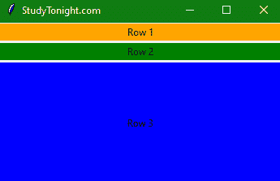
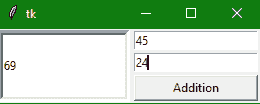
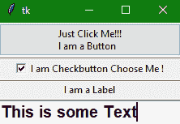

Tkinter PanedWindow小部件
在本教程中，我们将介绍 Tkinter PanedWindow 小部件，它主要是一个包含一个或多个子小部件的容器小部件，也称为 Panes 。
该小部件以垂直的或水平的方式排列子小部件。**
它也被称为 几何管理器 小部件。
这个小部件用于在使用 Tkinter 模块创建的 Python 桌面应用中实现不同的布局。
用户可以通过鼠标移动分隔线和边框来调整面板窗口小部件内的子小部件的大小。
您可以使用面板插件实现多个面板。
这是一个简单的 Tkit 应用窗口，三个小部件垂直堆叠在一个 PanedWindow 小部件中。

Tkinter panedwindow widget
PanedWindow 小部件的语法如下所示:
W = PanedWindow(master, options)
在上面的语法中，master参数表示父窗口。您可以使用许多选项来更改面板的外观，这些选项被写成逗号分隔的。
Tkinter panedwindow widget 选项:
以下是 PanedWindow 小部件使用的各种选项:
| 选项名称 | 描述 |
|---|---|
bd |
该选项用于表示小部件的 3D 边框尺寸。该选项的默认值表示槽不包含边框，箭头和滑块包含 2 像素边框尺寸。 |
bg |
该选项代表小部件的背景颜色。 |
cursor |
该选项将鼠标指针转换为指定的光标类型，并可设置为箭头、点等。 |
borderwidth |
该选项用于指示小部件的边框宽度。该选项的默认值为 2 像素。 |
handlepad |
To 表示手柄和窗扇末端之间的距离我们使用这个选项。在水平方向，它是窗扇顶部和把手之间的距离。该选项的默认值为 8 像素** |
height |
该选项代表小部件的高度。如果我们没有指定高度，那么高度将通过子部件的高度来计算。 |
handlesize |
该选项代表手柄的大小，默认值为 8 像素。此外，手柄将始终处于方形** |
orient |
如果我们想将和子窗口并排放置，该选项的值将被设置为水平。如果我们想从上到下放置子窗口，那么这个选项的值将被设置为垂直。 |
sashpad |
该选项用于表示围绕每个窗扇进行的填充。该选项的默认值为 0 。 |
sashwidth |
该选项指示窗扇的宽度。这个选项的默认值是 2 像素。 |
sashrelief |
该选项用于表示每个窗扇周围的类型的边框。该选项的默认值为平面** |
showhandle |
要显示手柄，该选项的值应设置为真。该选项的默认值为假。 |
width |
该选项代表小部件的宽度。如果我们没有指定高度，那么高度将通过子部件的高度来计算。 |
relief |
该选项表示边框类型。这个选项的默认值是 FLAT 。 |
Tkinter PanedWindow 小部件方法:
以下是 PanedWindow 小部件使用的一些方法:
| 方法名称 | 描述 |
|---|---|
config(options) |
这种方法主要用于配置任何带有指定选项的小部件。 |
get(startindex,endindex) |
此方法用于获取指定给定范围内的文本。 |
add(child,options) |
此方法用于将窗口添加到父窗口。 |
Tkinter PanedWindow 小部件示例
下面我们有一个理解 PanedWindow 小部件的基本例子。让我们看看下面给出的代码片段:
from tkinter import *
# event handler for button
def addition():
x = int(e1.get())
y = int(e2.get())
leftdata = str(x+y)
leftinput.insert(1, leftdata)
# first paned window
w1 = PanedWindow()
w1.pack(fill=BOTH, expand=1)
leftinput = Entry(w1, bd=5)
w1.add(leftinput)
# second paned window
w2 = PanedWindow(w1, orient=VERTICAL)
w1.add(w2)
e1 = Entry(w2)
e2 = Entry(w2)
w2.add(e1)
w2.add(e2)
bottomBtn = Button(w2, text="Addition", command=addition)
w2.add(bottomBtn)
mainloop()

如上图所示，在输出中，我们有一个应用窗口，其中有 3 个 tkinter Entry 小部件和 1 个 tkinter button 小部件，使用 2 个 PanedWindow 小部件堆叠在一起，相互垂直排列。
如果您愿意，在右侧输入小部件中提供两个数字，然后单击加法按钮，右侧数字相加的结果，将显示在左侧的输入小部件中。
Tkinter PanedWindow 小部件-多个窗格示例
让我们看看下面给出的这个小部件的另一个代码片段:
from tkinter import *
from tkinter import tk
win = Tk()
pw = PanedWindow(orient ='vertical')
#creating Button widget
top = tk.Button(pw, text ="Just Click Me!!!\nI am a Button")
top.pack(side=TOP)
#Adding button widget to the panedwindow
pw.add(top)
#Creating Checkbutton Widget
bot = Checkbutton(pw, text="I am Checkbutton Choose Me!")
bot.pack(side=TOP)
pw.add(bot)
label = Label(pw, text="I am a Label")
label.pack(side=TOP)
pw.add(label)
string = StringVar()
entry = Entry(pw, textvariable=string, font=('arial', 15, 'bold'))
entry.pack()
# This is used to force focus on particular widget
# that means widget is already selected for some operations
entry.focus_force()
pw.add(entry)
pw.pack(fill = BOTH, expand = True)
# To show sash
pw.configure(sashrelief = RAISED)
mainloop()

在上面的代码示例中，我们已经在 panedwindow 小部件中创建了多个小部件。我们还使用了StringVar()变量，并使用了focus_force()函数在加载应用时使输入小部件处于焦点位置。
总结:
在本教程中，我们了解了 PanedWindow 小部件，如果您想在应用中创建多列网格状的小部件排列，这是一个很好的小部件。